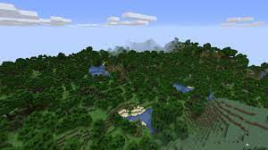
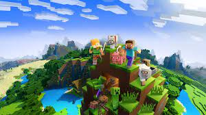
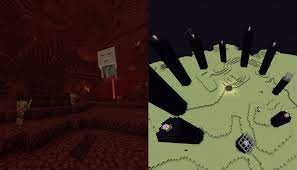
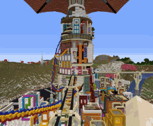
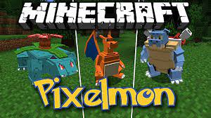
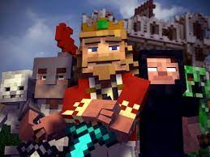
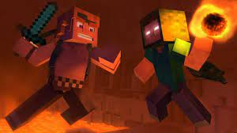

This is a fan page dedicated to the brilliant game of Minecraft
About It
Minecraft is an open world sand box that allows players to express their full creativity and explore a near infinite world
Story
It has you play as a person stranded in a world with nothing you are then tasked with gather resources build equipment and and protection from the harmful creatures that appear at night like zombies and skeletons with bows and creepers who explode when they get close to you.
As you progress through the game you explore different dimentions like the Nether, which is a hellish landscape, to gather the resources neccessary to reach the final dimention The End, which is a dark void with floating islands, where you will face the final boss the Ender Dragon.
Ways to Play
Minecraft also offers different modes of playing the game such as a creative mode which gives you access to any item in the game, the ability to fly around and biuld away to your hearts content with no worries of any problems associated to the survival mode. You don't need to worry about anything attacking you with everything being passive towards you and the fact you are unkillable in this mode.
Minecraft can also be experienced in millions of different ways with the availability of mods for Minecraft on PC which can give more of a challenge or a more fun experience, one of the most famous mods for Minecraft is Pixelmon which brings the widely loved game Pokemon into minecraft.
The Minecraft Community
Minecraft was created by Notch(Markus Persson) and Mojang Studios in 2011 and quickly became a favourite to most if not everyone who has played it.
The presence of minecraft in the world was made stronger with the countless minecraft content creators spreading it tho their viewer community like Captain Sparklez and Mumbo Jumbo
CaptainSparklez Youtube Channel Mumbo Jumbo Youtube ChannelMinecraft Parody songs
Fallen Kingdom by CaptainSparklez Take Back The Night by CaptainSparklez